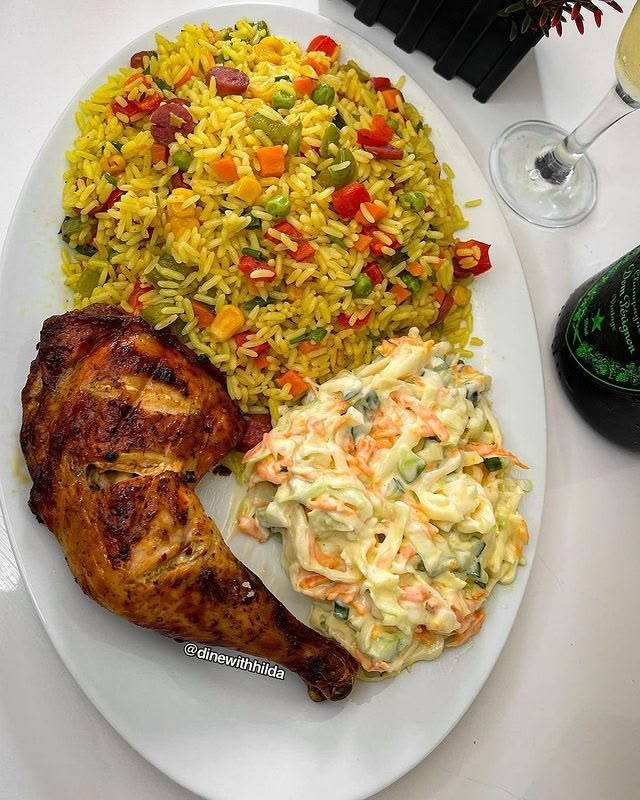
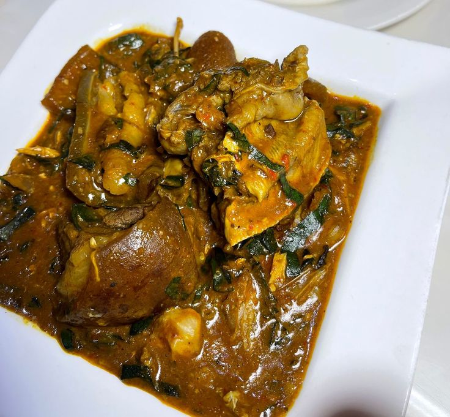
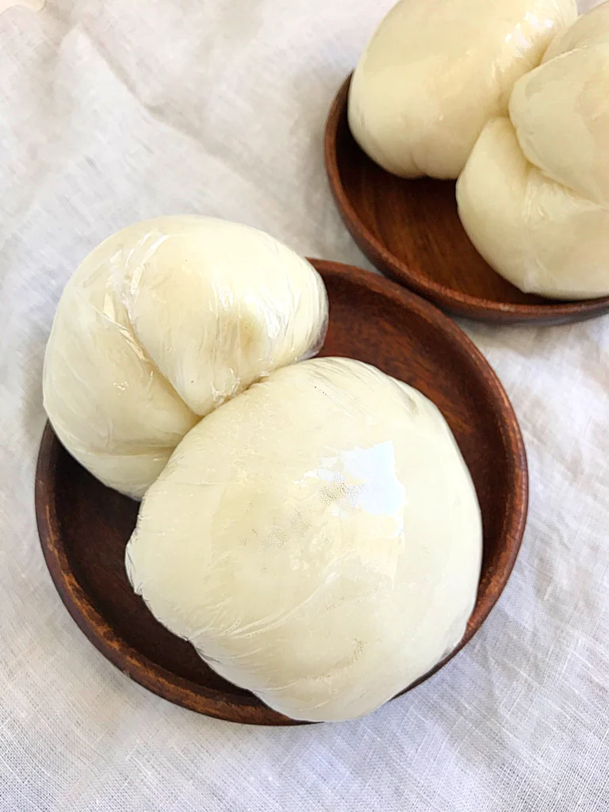
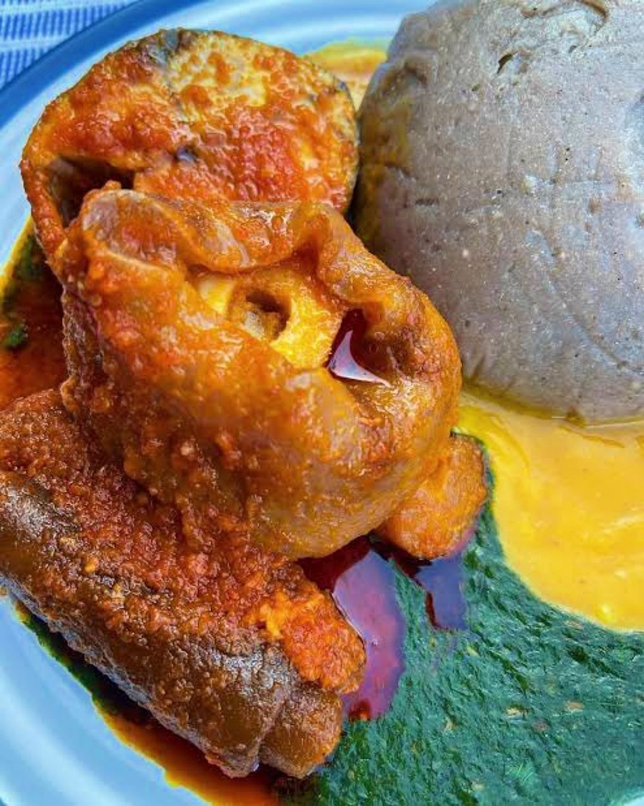
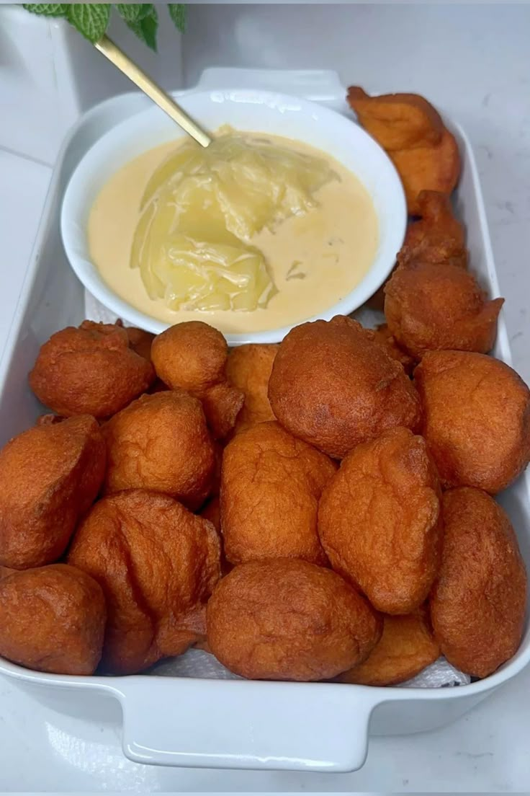
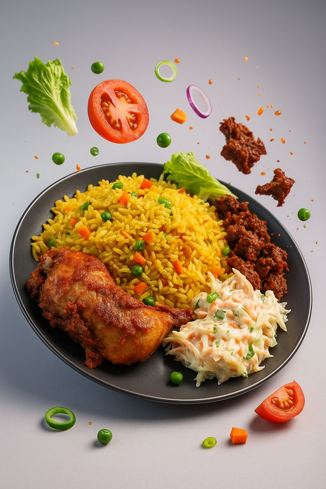

🇳🇬 100% Authentic Nigerian Cuisine
Taste the Soul of Nigeria
From smoky Jollof to steaming Egusi soup — every dish cooked with love, just like Mama made it.

From smoky Jollof to steaming Egusi soup — every dish cooked with love, just like Mama made it.
Cooked from scratch every morning
No artificial flavours or preservatives
Hot to your door in 45 minutes
Family recipes passed down generations












₦3,500 · 25–35 min
₦2,500 · 20 min
₦5,300 · 30 min
₦2,200 · 20 min
₦4,800 · 30 min
₦3,800 · 25 min
₦800 · 15 min
₦2,500 · 25 min


Emperor's Kitchen started as a small pot of Jollof rice in Delta State. Emperor's Kitchen cooked for neighbours, then for the whole street, and eventually for the city.
Today, we serve hundreds of guests daily — but every dish is still made with the same love, the same family recipes, and the same belief that good food brings people together.
Cool local drinks brewed fresh in-house every day.
"The Egusi soup tasted really great no doubt i will be coming back for more."
"I ordered the Party Jollof for my son's birthday. Every single guest asked me where I got it from. Emperor's Kitchen for life!"
"As a Kenyan living in Delta, I was amazed they had Nyama Choma on the menu. Tasted like home. Incredible restaurant."
Walk-ins welcome, but bookings get priority seating and special treatment.